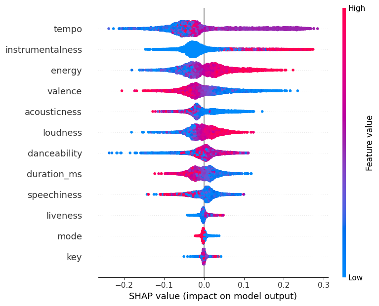

This is the Anatomy of a Song Popularity!
CONCEPT
CONCEPT
This project describes a new, emerging way to shed light on a complex dataset and to communicate the findings with a broad audience. We begin this process with some exploratory data analysis, then create interactive visualizations and embed them within a narrative using infographic Poster. We illustrate the concepts using data from Spotify. Our findings uncover interesting patterns, both qualitative and quantitative, and explain our use of popular technologies during each phase of the process
DATA
The initial dataset, found on Kaggle, included qualitative data on over 32800! Songs. The data has information about each tracks along with their audio feature set or audio feature vectors with values of Danceability, Valence, Tempo etc..
In our exploratory data analysis phase, we found several interesting results. For example, we found that the most popular genre were Pop, Latin and Rap. We also noticed, Martin Garrix, Chainsmokers and David Guetta are the most popular Artists, while Trevor Daniel, Y2K, Don Toliver, Roddy Ricch have high mean popularity.
Also we identified that Acousticness, Danceability, and Loudness as crucial factors shaping track popularity, we delved deeper to analyze how these features vary across genres.Interestingly, only Loudness showed significant variation across genres, with popular genres like Pop, Latin, and Rap having a loudness value ranging between -6 and -7. In contrast, the average Acousticness and Danceability remained consistent across these popular genres.
PROCESS
In order to analyze the spotify data and generate insights out of it, we followed a process that looked at the data using the following visualizations:
- Popularity Trends of Genres by Release Date
- Exploratory Data Analysis using Python
- Exploring the correlation between Popularity and features contributing to popularity
- Pie Chart Visualization
- Linking Line Chart
- Scatter Plot
- Multi Class Random Forest Classifier
- SHAP Values to explain the model performance

Bar chart showing the Genre popularity over the years

Correlation between the Audio vectors
SHAP Summary plot explainning the feature importance